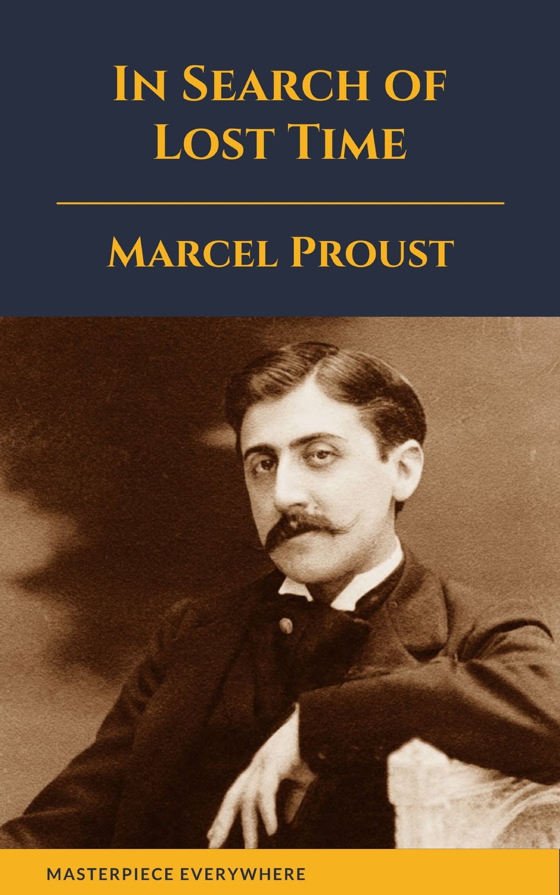
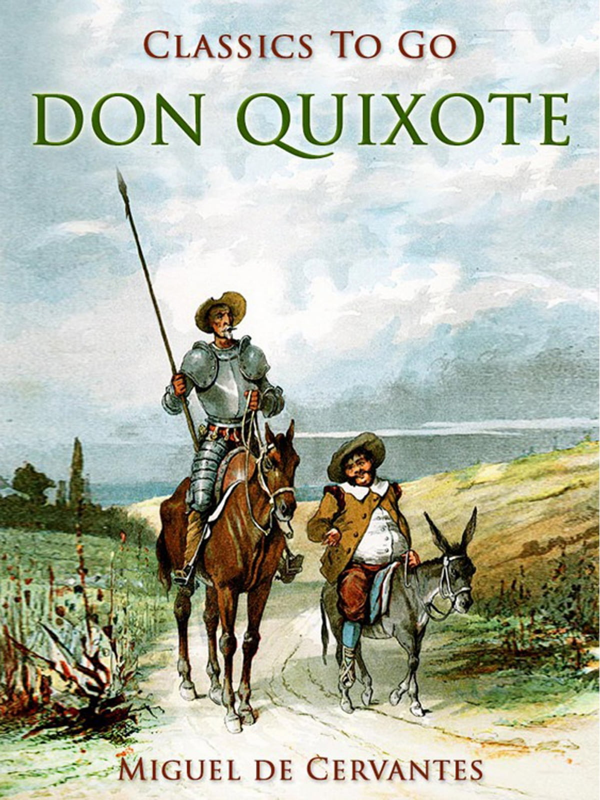

In Search of Lost Time
Wriiten By : Marcel Proust
Swann's Way, the first part of A la recherche de temps perdu, Marcel Proust's seven-part cycle, was published in 1913...... more
Ulysses

Wriiten By : James Joyce
Ulysses chronicles the passage of Leopold Bloom through Dublin during an ordinary day, June 16, 1904..................... more
Don Quixote
Wriiten By : Miguel de Cervantes
Alonso Quixano, a retired country gentleman in his fifties, lives in an unnamed section of La Mancha with his niece........... more
One Hundred Years of Solitude

Wriiten By : Gabriel Garcia Marquez
One of the 20th century's enduring works, One Hundred Years of Solitude is is a widely beloved and acclaimed novel known... more